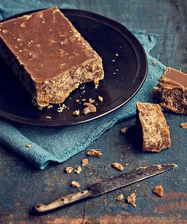

Rapadura
Um doce típico brasileiro, feito a partir do caldo de cana-de-açúcar, muito utilizado em receitas ou consumido puro.

Ingredientes
Rende 1 peça média
- 1 litro de caldo de cana fresco
- 1 colher de sopa de limão (opcional, para cristalização)
Modo de Preparo
Tempo estimado: 1 a 2 horas
- Em uma panela grande e funda, leve o caldo de cana ao fogo médio.
- Deixe reduzir, mexendo de vez em quando, até atingir ponto de bala mole.
- Adicione o limão, se desejar, para evitar cristalização indesejada.
- Despeje a mistura em formas untadas ou em uma superfície lisa e deixe esfriar até endurecer.
- Quando firme, corte em pedaços ou forme barras e guarde em local seco.
Dica do Chef: Para rapadura mais lisa e brilhante, mexa cuidadosamente e retire a espuma que se forma durante o cozimento.